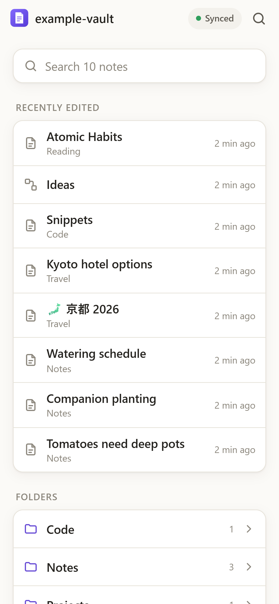
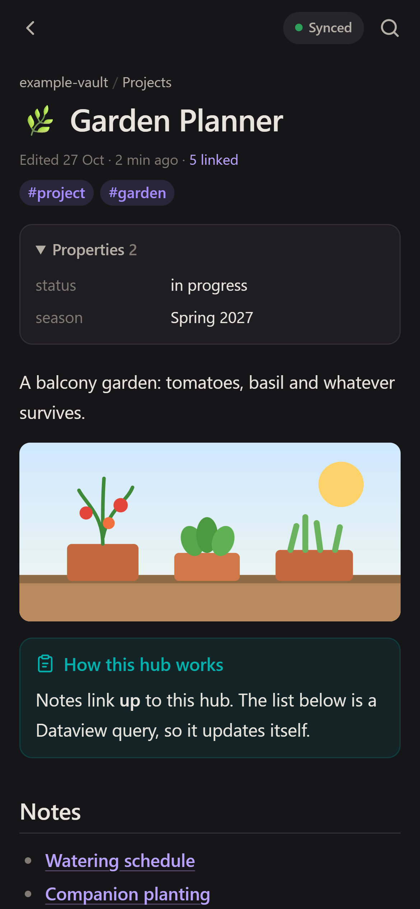
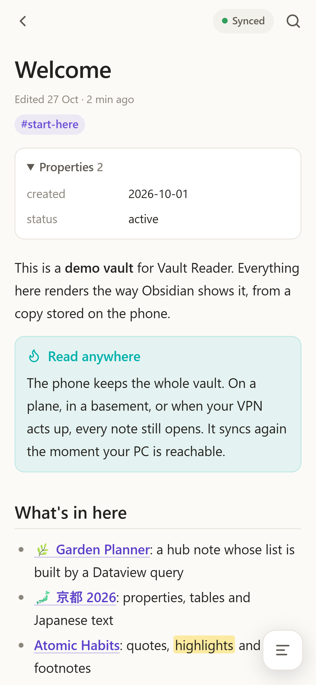
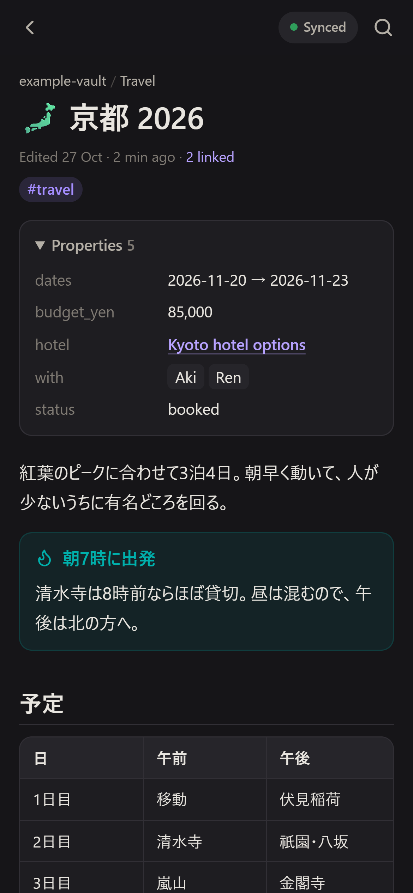
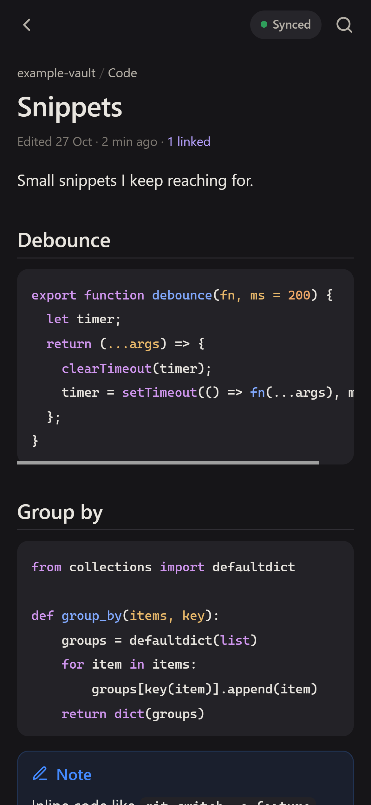
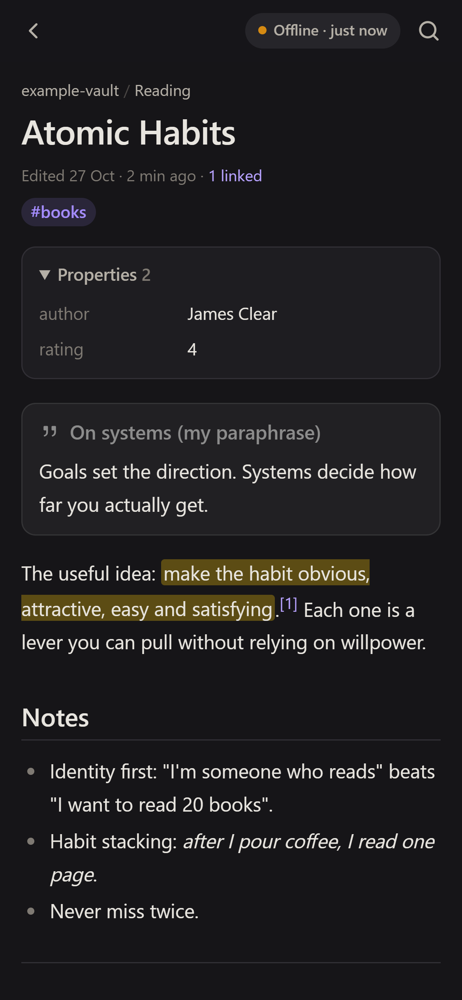

A tiny server on your PC renders your Obsidian vault. A phone app keeps a full copy and opens every note instantly, with or without signal. No sync service, no cloud, nothing written back.
Node.js 20+ · Tailscale · Any modern phone browser



Everything you need to look things up on the go, nothing that can break your vault.
The whole vault lives on your phone. Planes, basements and dead zones don't matter: every note opens.
Only changed notes are downloaded, in small batches saved as they arrive. Every request times out, so a bad network never blocks you.
Wikilinks resolve the way Obsidian does. Embeds, callouts, properties, tasks, footnotes and canvases all render.
Common LIST and TABLE queries run on the PC, so hub notes show real lists on the phone.
Titles, aliases, full text and #tags, searched on the device. Works with Japanese, Chinese and Korean too.
Binds to localhost, reachable only on your tailnet. Exclude private folders; dotfiles and .env are never served.
The heavy lifting happens on the computer where your vault already lives. The phone only stores the result.
A Node server reads your Markdown, resolves links and embeds, runs Dataview queries and hashes every note.
tailscale serve gives it a real HTTPS address only your devices can reach. No ports opened to the internet.
The app downloads what changed and stores it. Reading never waits on the network, and it re-syncs when the PC is reachable.
Typography tuned for small screens, light and dark themes, and four text sizes.
[[note#heading|alias]], ![[note#section]], images with sizes, PDFs, audio and video[!tip]-

The status pill always tells you where your copy stands. When the PC can't be reached, you keep reading the last synced version.

A sharper tool for one job: reading everywhere while you keep writing on the desktop.
| Vault Reader | Obsidian mobile + sync | |
|---|---|---|
| Needs a sync service | No, reads straight from your PC | Obsidian Sync, Syncthing, iCloud… |
| Edit notes | No, by design | Yes |
| Sync conflicts with desktop edits | Impossible | Possible |
| What reaches the phone | Only notes and images you allow | Everything you don't exclude |
| Works offline | Yes | Yes |
You need Node.js 20+ and Tailscale on your PC and phone, with HTTPS certificates enabled.
Then open http://localhost:4620.
Copy config.example.json to config.json and set the path.
Open https://<your-pc>.<tailnet>.ts.net:10443 and choose Install app or Add to Home screen. The first launch downloads your vault; after that it works offline.
Only to sync. The phone reads its own copy, so it works with the PC off; new edits arrive the next time the PC is reachable.
No, and that's deliberate. Read-only means the phone can never create a sync conflict or corrupt a note you're editing on the desktop.
Core Markdown and Obsidian syntax render fully. Dataview LIST/TABLE queries are evaluated on the server (a common subset). DataviewJS, Excalidraw and other plugin-specific blocks show a notice instead.
The server listens on 127.0.0.1 only, and tailscale serve exposes it to your own tailnet, not the internet. Only notes, canvases and media in the index are served; excluded folders, dotfiles and .env are unreachable. Rendered HTML is sanitised.
Some networks drop large packets inside the tunnel. On Windows, lowering Tailscale's MTU usually fixes it: netsh interface ipv4 set subinterface "Tailscale" mtu=1200 store=persistent (admin). Your offline copy keeps working meanwhile.
On your home network you can reach it any way you like, but phones only install PWAs from HTTPS origins. Tailscale gives you a trusted certificate with one command, which is why it's the recommended setup.